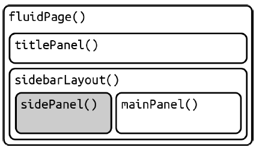
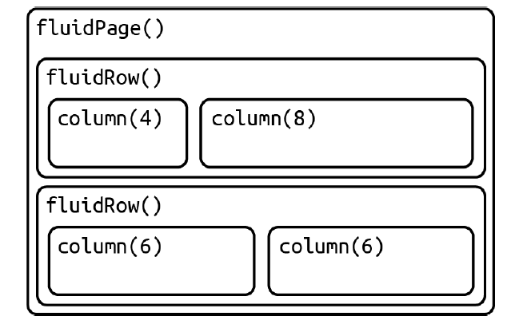
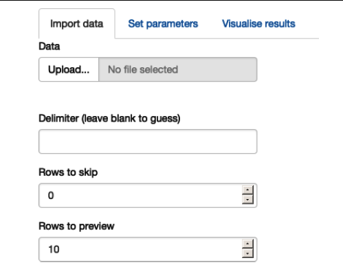
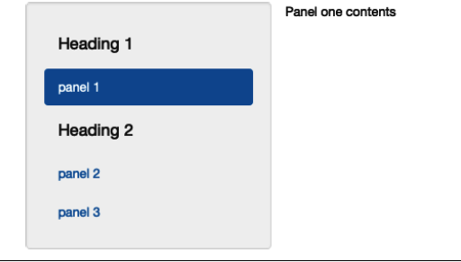

All input functions in Shiny have a common structure. They require the first argument, called inputId, which serves as the identifier to connect the frontend and backend of your application. The inputId should be a simple string consisting only of letters, numbers, and underscores. It must also be unique to refer to the specific input control in your server function.
Most input functions also have a second parameter called label, which is used to create a user-friendly label for the control. It should be carefully chosen to ensure usability for humans. Additionally, the value parameter is often available to set the default value for the input control. Other parameters specific to each control can be provided by name.
When creating an input, it is recommended to provide the inputId and label arguments by their respective positions, and supply other arguments by their names. For example:
sliderInput("min", "Limit (minimum)", value = 50, min = 0, max = 100)Shiny offers various input controls that can be categorized based on the type of control they create. While not exhaustive, here's a brief overview of some important parameters for each control. To get comprehensive details, it's recommended to refer to the documentation:
- Numeric Input: Allows users to input numeric values. Important parameters include
value,min,max, andstep.
numericInput("myNum", label = "Numeric Input")
value, min, max, and step.sliderInput("mySlider", label = "Slider Input", min ="0", max="100", step="1", value="0")
value and placeholder.textInput("myText", label = "Text Input")
value and checked.checkboxInput("myCheck", label = "Checkbox Input")
choices and selected.checkboxGroupInput("myCheckGroup", label = "Checkbox Group Input")
choices and selected.radioButtons("myRadio", label = "Radio Buttons Input")
choices and selected.selectInput(inputId,label,choices,selected = NULL,multiple = FALSE,selectize = TRUE,width = NULL,size = NULL)
value and min/max dates.dateInput("myDate", label = "Date Input")
start and end values.dateRangeInput("myDateRange", label = "Date Range Input")
accept, multiple, and placeholder.fileInput("myFile", label = "File Input")
label and icon.actionButton("myButton", label = "Action Button")
These are just some of the input controls available in Shiny. It's important to explore the documentation
ui <- fluidPage(
textInput("name", "What's your name?"),
passwordInput("password", "What's your password?"),
textAreaInput("story", "Tell me about yourself", rows = 3)
)
ui <- fluidPage( numericInput("num", "Number one", value = 0, min = 0, max = 100),
sliderInput("num2", "Number two", value = 50, min = 0, max = 100),
sliderInput("rng", "Range", value = c(10, 20), min = 0, max = 100) )
ui <- fluidPage(
dateInput("dob", "When were you born?"),
dateRangeInput("holiday", "When do you want to go on vacation next?")
)
animals <- c("dog", "cat", "mouse", "bird", "other", "I hate animals")
ui <- fluidPage(
selectInput("state", "What's your favourite state?", state.name),
radioButtons("animal", "What's your favourite animal?", animals)
)
ui <- fluidPage(
selectInput("state", "What's your favourite state?", state.name, multiple = TRUE)
)
ui <- fluidPage(
checkboxGroupInput("animal", "What animals do you like?", animals)
)
Outputs in the Shiny UI create placeholders that are filled by the server function. Similar to inputs, outputs require a unique ID as their first argument. For example, if the UI specification has an output with ID "plot", it can be accessed in the server function using output$plot.
There are three main types of outputs: text, tables, and plots. Each output function on the frontend is coupled with a corresponding render function in the backend. Let's explore the basics of these output functions and their render counterparts.
1. Text Output:
- Use
textOutput()to display regular text output. - Use
verbatimTextOutput()to display fixed width text, such as console output.
ui <- fluidPage(
textOutput("text"),
verbatimTextOutput("code"))
server <- function(input, output, session) {
output$text <- renderText({
"Hello friend!"
})
output$code <- renderPrint({
summary(1:10)
})
}2. Table Output:
- Use
tableOutput()andrenderTable()to display static tables of data. - Use
dataTableOutput()andrenderDataTable()to display dynamic tables with controls to change visible rows.
ui <- fluidPage(
tableOutput("table"),
dataTableOutput("datatable"))
server <- function(input, output, session) {
output$table <- renderTable({
head(iris)
})
output$datatable <- renderDataTable({
head(iris)
})
}ui <- fluidPage(
tableOutput("static"),
dataTableOutput("dynamic")
)
server <- function(input, output, session) {
output$static <- renderTable(head(mtcars))
output$dynamic <- renderDataTable(mtcars, options = list(pageLength = 5))
}3. Plot Output:
- Use
plotOutput()andrenderPlot()to display R graphics, such as base or ggplot2 plots. - Adjust the width and height using the
widthandheightarguments. - Set
res = 96to match the plot with what you see in RStudio.
ui <- fluidPage(
plotOutput("plot")
)
server <- function(input, output, session) {
output$plot <- renderPlot({
plot(1:10)
})
}Plots are special because they can also act as inputs. plotOutput() has additional arguments like click, dblclick, and hover that can be used to create reactive inputs for handling user interactions with the plot.
1. Basic Guts of every Shiny Application
library(shiny)
ui <- fluidPage(
# frontend interface
)
server <- function(input, output, session) {
# backend logic
}
shinyApp(ui, server)
Previously, we learned about the frontend and backend of a Shiny app. The frontend, represented by the ui object, contains the HTML that is displayed to all users. It is straightforward because every user sees the same HTML. However, the backend, represented by the server function, is more complex because each user needs their own independent version of the app. This ensures that when one user interacts with the app, it doesn't affect the outputs seen by other users.
To achieve this independence, Shiny calls the server function for each new session. Just like any other R function, the server function creates a local environment specific to that session. This isolation allows each session to have its own unique state and variables. Therefore, most of the reactive programming in Shiny occurs within the server function. The server function takes three parameters: input, output, and session. These objects are automatically created by Shiny when the session begins and are associated with that specific session. At this point, we will focus on understanding the input and output arguments, while leaving the session parameter for future chapters.
2. Accessing Input Values
The input argument in the server function is a list-like object that holds all the input data sent from the user's browser. It is structured in a way that each input control is named according to its input ID specified in the UI. For example, if your UI includes a numeric input control with an input ID of "count", like this:
ui <- fluidPage(
numericInput("count", label = "Number of values", value = 100)
)
You can access the value of that input using input$count. Initially, it will contain the default value of 100, and as the user modifies the input value in the browser, it will be automatically updated to reflect the new value.
To read from an input, you must be within a reactive context created by functions like renderText() or reactive(). This constraint ensures that outputs can automatically update when an input changes. If you attempt to access an input value outside of a reactive context, you will encounter an error message indicating the need to wrap it inside reactive() or observer(). Here's an example code that demonstrates the error message when trying to access the input$count value outside of a reactive context:
server <- function(input, output, session) { output$text <- renderText({ message("The value of input$count is ", input$count) "Output Text" }) } shinyApp(ui, server)
In this modified code, the message() function is placed within the renderText() function, which is a reactive context. This allows the output text to be updated whenever the input value changes, and it avoids the error of accessing the input value outside of a reactive context.
3. Accessing Output Values
The output argument in the server function is a list-like object that is used to send output to the UI. Similar to the input object, it is named according to the output ID. The main difference is that the output object is used for sending output instead of receiving input. To associate an output with a UI element, you need to use a render function in the server.
ui <- fluidPage(
textOutput("greeting")
)
server <- function(input, output, session) {
output$greeting <- renderText("Hello human!")
}
4. Reactive Programming
An app is going to be pretty boring if it only has inputs or only has outputs. The real magic of Shiny happens when you have an app with both.
ui <- fluidPage(
textInput("name", "What's your name?"),
textOutput("greeting")
)
server <- function(input, output, session) {
output$greeting <- renderText({
paste0("Hello ", input$name, "!")
})
}
When the user types their name into the textInput, the textOutput will automatically update to greet them. This is the essence of reactive programming.
5. Reactive Expressions
Reactive expressions play a crucial role in Shiny apps as they provide valuable information to optimize performance and simplify the understanding of the app's reactive graph. They have characteristics of both inputs and outputs
Reactive expressions are a special type of reactive programming that allow you to cache the results of an expression. This is useful when you have a long-running calculation that you don't want to re-run every time a user changes an input.
ui <- fluidPage(
numericInput("n", "How many random numbers?", 100),
textOutput("mean")
)
server <- function(input, output, session) {
x <- reactive({
rnorm(input$n)
})
output$mean <- renderText({
mean(x())
})
}
1. Random Normal Distribution with Plots
library(shiny)
library(tidyverse)
ui <- fluidPage(tags$h1(style = 'text-align:center;','Random Normal Distribution'),
sidebarLayout(
sidebarPanel(
sliderInput("num", "Number of Random Numbers", value = 10, min = 1, max = 100),
numericInput("mean", "Mean of Distribution", value = 100, min = 1, max = 200),
numericInput("sd", "Standard Deviation of Distribution", value = 15, min = 1, max = 50),),
mainPanel(
verbatimTextOutput("randomOutput"),
plotOutput('histogram'))))
server <- function(input, output, session) {
random_numbers <- reactive({rnorm(input$num, input$mean, input$sd)})
output$randomOutput <- renderPrint({random_numbers() %>% round(2)})
output$histogram <- renderPlot({tibble(x = random_numbers()) %>%
ggplot(data = ., aes(x = x)) +
geom_histogram(col = 'gray', fill = 'skyblue', bins = 10)}
}
shinyApp(ui, server)
2. Create a simulation app that simualtes slopes
library(shiny)
ui <- fluidPage(
sidebarLayout(
sidebarPanel(
numericInput("b0", "b0:", value = 0.2),
numericInput("b1", "b1:", value = 0.5),
numericInput("n", "Sample Size:", value = 10),
numericInput("reps", "Number of Repetitions:", value = 1000),
actionButton("run", "Run")
),
mainPanel(
tabsetPanel(
tabPanel("All Slopes", tableOutput("allResults")),
tabPanel("Overall Results", tableOutput("averages"))
)
)
)
)
server <- function(input, output, session) {
observeEvent(input$run, {
reps <- input$reps
b0 <- input$b0
b1 <- input$b1
mat.n <- input$n
mat.slope <- matrix(0, reps, length(mat.n))
mat.mse <- matrix(0, length(mat.n), 1)
mat.se <- matrix(0, length(mat.n), 1)
for (j in 1:length(mat.n)) {
for (i in 1:reps) {
X <- runif(mat.n[j], -1, 1)
y <- b0 + b1*X + rnorm(mat.n[j], 0, 1)
mod <- lm(y ~ X)
mat.slope[i, j] <- mod$coef[2]
}
mat.mse[j] <- mean((mat.slope[, j] - b1)^2)
mat.se[j] <- sd(mat.slope[, j])
cat("Loop", j, "out of", length(mat.n), "\n")
}
output$allResults <- renderTable({
data.frame(slopes = mat.slope, samplesize = mat.n, standard_error = mat.se)
})
output$averages <- renderTable({
data.frame(mat.mse, mat.se)
})
})
}
shinyApp(ui, server)
Layout functions in Shiny are used to organize and structure the visual components of an app. They allow you to create a hierarchy of layouts, which corresponds to the generated HTML structure. This helps in understanding and organizing the layout code. There are different layout functions available in Shiny that you can use to create different types of layouts. Some commonly used layout functions include:
fluidPage(): This is the most common layout function used in Shiny. It creates a page with a fluid layout, where the content adjusts to the size of the browser window.
ui <- fluidPage(
tags$h1("Welcome to My App"),
p("This is a sample app created with Shiny."),
# Additional UI components go here
)
fixedPage(): This function creates a page with a fixed layout, where the content has a fixed width and height.ui <- fixedPage(
tags$h1("Welcome to My App"),
p("This is a sample app created with Shiny."),
# Additional UI components go here
)
navbarPage(): This function creates a page with a navigation bar at the top, allowing you to switch between different tabs or sections.ui <- navbarPage(
title = "My App",
tabPanel("Tab 1",
tags$h2("Content for Tab 1"),
p("This is the first tab."),
# Additional UI components for Tab 1 go here
),
tabPanel("Tab 2",
tags$h2("Content for Tab 2"),
p("This is the second tab."),
# Additional UI components for Tab 2 go here
)
)
sidebarLayout(): This function creates a layout with a sidebar panel on one side and a main panel on the other side.ui <- sidebarLayout(
sidebarPanel(
tags$h3("Sidebar"),
p("This is the sidebar content."),
# Additional UI components for the sidebar go here
),
mainPanel(
tags$h1("Main Content"),
p("This is the main content area."),
# Additional UI components for the main panel go here
)
)
splitLayout(): This function allows you to split the page into multiple sections or columns.ui <- splitLayout(
cellWidths = c("30%", "70%"),
tags$h2("Section 1"),
p("This is the first section."),
# Additional UI components for the first section go here
tags$h2("Section 2"),
p("This is the second section."),
# Additional UI components for the second section go here
)
tabsetPanel(): This function creates a tabbed layout, where each tab represents a different section of the app.ui <- tabsetPanel(
tabPanel("Tab 1",
tags$h2("Content for Tab 1"),
p("This is the first tab."),
# Additional UI components for Tab 1 go here
),
tabPanel("Tab 2",
tags$h2("Content for Tab 2"),
p("This is the second tab."),
# Additional UI components for Tab 2 go here
)
)
These layout functions can be nested and combined to create complex and visually appealing app layouts. By carefully organizing and structuring the visual components, you can improve the usability and aesthetics of your Shiny app.
1. Basic App with a sidebar
fluidPage(
titlePanel(
# app title/description
),
sidebarLayout(
sidebarPanel(
# inputs
),
mainPanel(
# outputs
)
)
)
2. The structure underlying a simple multirow app.
fluidPage(
fluidRow(
column(4,
...
),
column(8,
...
)
),
fluidRow(
column(6,
...
),
column(6,
...
)
)
)
3. A tabsetPanel() allows the user to select a single tabPanel() to view.
ui <- fluidPage(
tabsetPanel(
tabPanel("Import data",
fileInput("file", "Data", buttonLabel = "Upload..."),
textInput("delim", "Delimiter (leave blank to guess)", ""),
numericInput("skip", "Rows to skip", 0, min = 0),
numericInput("rows", "Rows to preview", 10, min = 1)
),
tabPanel("Set parameters"),
tabPanel("Visualise results")
)
)
4. Navigation Bar
ui <- fluidPage(
navlistPanel(
id = "tabset",
"Heading 1",
tabPanel("panel 1", "Panel one contents"),
"Heading 2",
tabPanel("panel 2", "Panel two contents"),
tabPanel("panel 3", "Panel three contents")
)
)